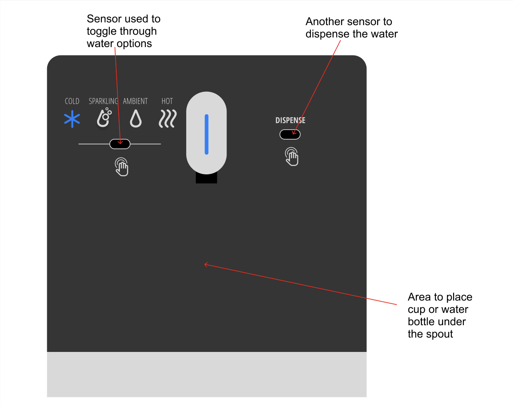
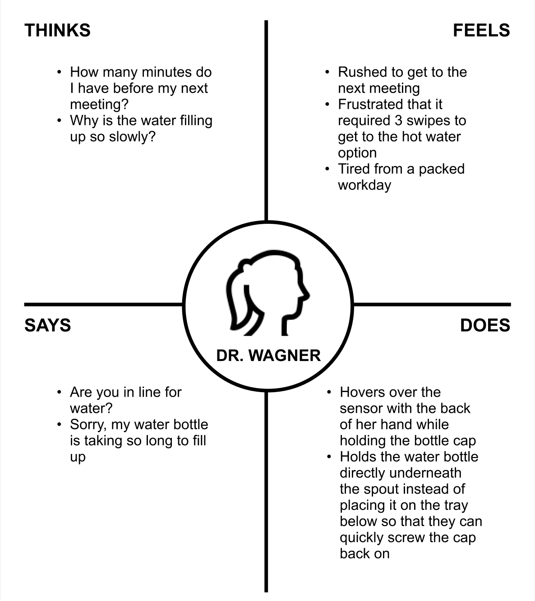
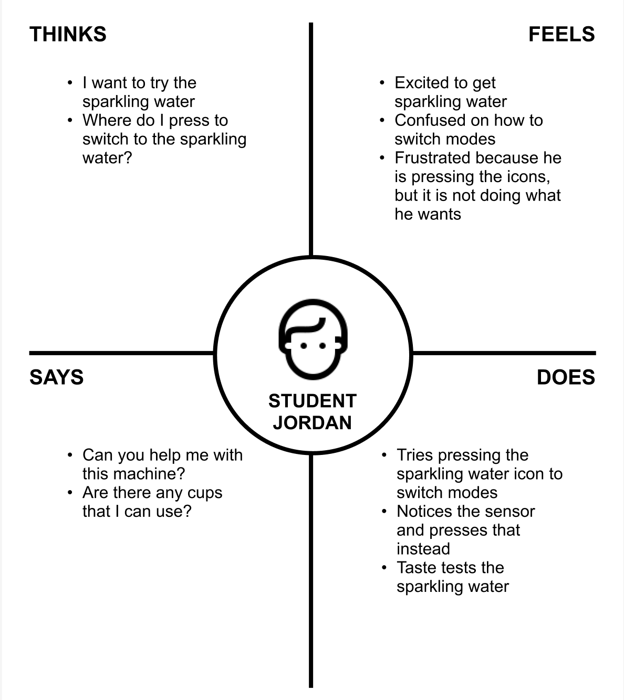

Storyboard
Finally, let's follow Dr. Wagner through one of her typical interactions with the Quest water dispenser.
Dr. Wagner's Storyboard


A few months ago, the Data Science Institute at Brown University replaced their old water dispenser with a new Quench COVID-19 model. This new model introduces hovering to activate sensors, removing the need for users to touch the machine. However, this begs the questions: what sorts of trade-offs does this new feature introduce in the design of a water dispenser?
First, let's get to know the interface of the Quench water dispenser. This Quench water dispenser is a COVID-19 model that incorporates sensors that users can hover over to make selections. It includes one sensor that is used to select different water options and another sensor that is used to dispense water.
Next, let's conduct some interviews to learn about some experiences users have while interacting with this interface.
Now that we've interviewed our users, let's contruct two personas that would interact with out Quench machine.
Dr. Wagner is a busy DSI faculty member. She finds the method of switching to the hot water option to be inconvenient and inefficient. Dr. Wagner represents the faculty members who have offices in the DSI and who use the dispenser often. They likely have a busy schedule and want to maximize efficiency to save time.
Jordan is a Master's student who only comes to the DSI for a bi-weekly meeting for a project. He is usually in and out, so he has never used the water dispenser at the DSI before. He found out from a friend that the water dispenser at the DSI has sparkling water, so he went to go check it out after his meeting. Jordan represents users who are unfamiliar with the Quench touchless interface and may find it confusing.
Finally, let's follow Dr. Wagner through one of her typical interactions with the Quest water dispenser.
The Quench water dispenser represents a thoughtful response to the contactless needs of a post-COVID world. However, this investigation revealed that the hover-based interface, while hygienic, introduces usability challenges for both frequent and first-time users. Through direct observation, interviews, and persona development, we uncovered that clarity in interaction cues and mode-switching efficiency are key areas for improvement.
This project taught me the value of engaging directly with users to understand their needs, habits, and frustrations. Conducting interviews revealed nuances in how different people interact with the same interface, as what feels intuitive to one user can be confusing to another. These real-world insights were essential in moving beyond assumptions and toward a more informed design perspective.